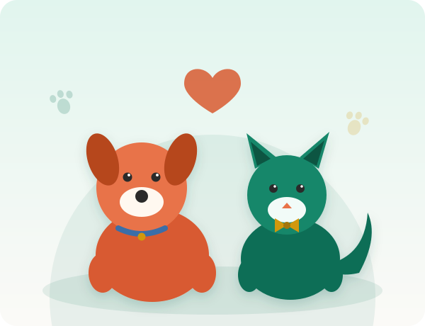

Non-profit · Johannesburg
Every animal deserves a second chance
Ubuntu Paws Animal Rescue rescues, rehabilitates and rehomes abandoned and injured animals across Johannesburg.
- Registered NPO
- 100% volunteer-run
- Since 2019

Who we are
Founded in 2019 by a small group of animal-welfare volunteers, Ubuntu Paws Animal Rescue has grown to rehome over 400 animals. We run a small shelter alongside a network of foster carers, and rely entirely on donations, sponsorships and the time of our volunteers.
Want to know more? Read about our team, mission and vision, browse the animals waiting for homes, send us an adoption, volunteer or sponsorship enquiry, or find our Bramley shelter and Randburg foster office.
400+
Animals rehomed since 2019
60+
Active volunteers and foster carers
1
Shelter, based in Johannesburg